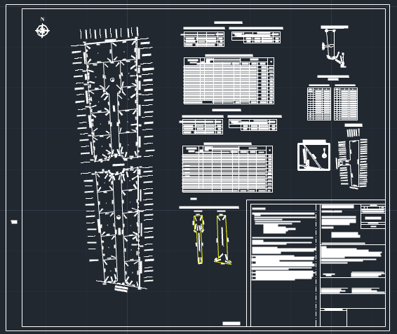
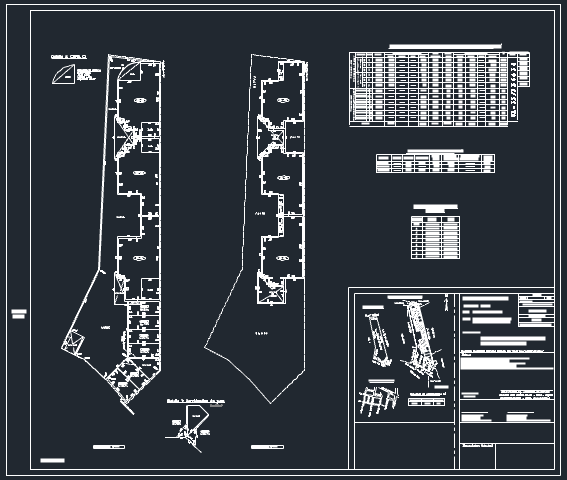
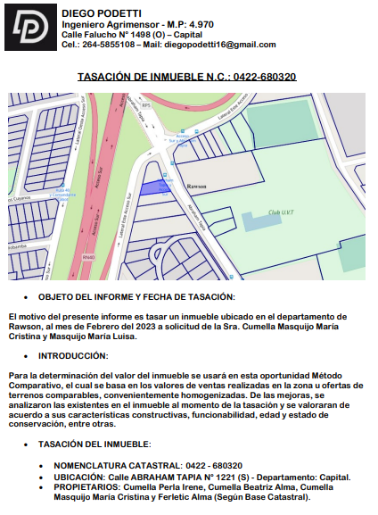

La "MENSURA URBANA" es un proceso de medición y delimitación de terrenos urbanos que se lleva a cabo para establecer los límites y dimensiones precisas de una propiedad o lote en un área urbana. Esta actividad se realiza con el objetivo de regularizar la tenencia de la tierra, establecer los derechos de propiedad y planificar el desarrollo urbano.
Los "CONJUNTOS iNMOBILIARIOS", también conocidos como desarrollos inmobiliarios o complejos inmobiliarios, son proyectos de construcción que incluyen múltiples unidades residenciales o comerciales en un mismo terreno o predio. Estos conjuntos están diseñados para ofrecer una variedad de opciones de vivienda o espacios comerciales en un mismo lugar. Los conjuntos inmobiliarios suelen contar con una planificación urbana integral, que incluye áreas comunes, infraestructura, servicios y amenidades para satisfacer las necesidades de los residentes o usuarios del complejo.
La "PROPIEDAD HORIZONTAL" es un régimen legal que permite la subdivisión de un inmueble en unidades privativas, como apartamentos, locales comerciales o estacionamientos, y áreas comunes, como pasillos, jardines o zonas recreativas. Cada propietario adquiere el derecho de propiedad sobre su unidad privativa y, a su vez, comparte la copropiedad de las áreas comunes con los demás propietarios.
La "TASACION iNMOBILIARIA" es el proceso de evaluar el valor de un inmueble, ya sea una propiedad residencial, comercial o industrial. La tasación inmobiliaria se lleva a cabo por parte de profesionales especializados, como tasadores o valuadores, y tiene como objetivo determinar el valor de mercado del inmueble en un momento específico. La tasación inmobiliaria se basa en diferentes factores